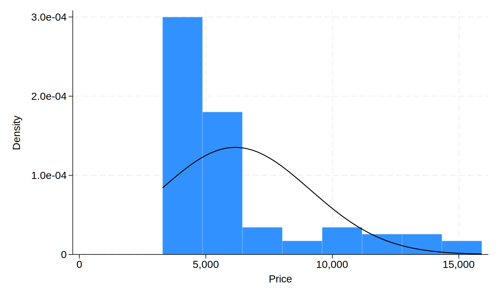
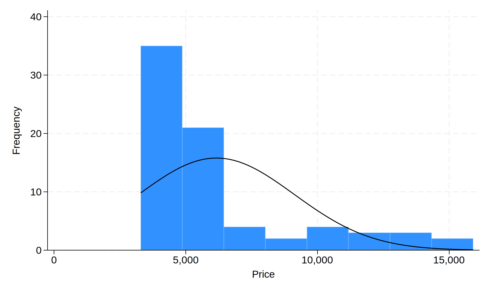
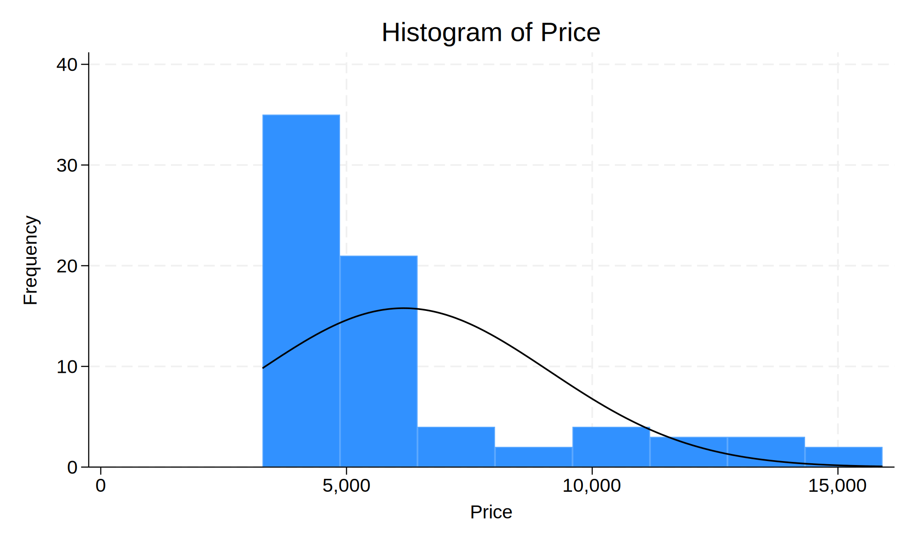

代码
import stata_setup
stata_setup.config('C:/Program Files/Stata18', 'mp', splash=False)Simon Zhou
2025年5月2日
describe // 描述数据集的基本信息
summarize // 描述变量的基本信息
list // 列出数据集的所有观测值
browse // 浏览数据集的所有观测值
inspect // 检查变量的分布情况
tabulate // 生成频数表
histogram // 生成直方图
scatter // 生成散点图使用内置数据集可以用 sysuse 命令来加载数据集。Stata内置了多个数据集，常用的有 auto、nlsw88、census 等。
sysuse auto // 美国1978年的汽车数据集
sysuse nlsw88 // 美国年轻妇女研究数据集
sysuse census // 1980年的美国人口普查数据集
sysuse cancer // 药物生存数据集
sysuse voter // 1996年美国选民调查数据集
sysuse lifeexp // 生命预期数据集
sysuse citytemp // 城市气温数据集
sysuse gnp96 // 1967-2002年美国国民生产总值数据集使用互联网上的数据集可以用 webuse 命令来加载数据集。
而 webuse 命令默认从 http://www.stata-press.com/data 这一路径获取数据。欲获取其他网络数据则只能使用 use + <full web url> 来获取。
当然也可以用 use 命令来加载本地数据集，但是需要给出数据集的完整路径。
Stata内置的 1978 automobile data（数据集名为 auto）是一个经典的示例数据集，常用于演示统计分析、回归建模等操作。
展示变量类型、格式、和任何的赋值/变量标签
语法: describe [varlist]
注意: [] 意味着[varlist]是可选的，varlist 是变量列表，可以指定一个或多个变量。如果不指定，Stata将显示数据集中所有变量的信息。
. describe
Contains data from C:\Program Files\Stata18/ado\base/a/auto.dta
Observations: 74 1978 automobile data
Variables: 12 13 Apr 2022 17:45
(_dta has notes)
-------------------------------------------------------------------------------
Variable Storage Display Value
name type format label Variable label
-------------------------------------------------------------------------------
make str18 %-18s Make and model
price int %8.0gc Price
mpg int %8.0g Mileage (mpg)
rep78 int %8.0g Repair record 1978
headroom float %6.1f Headroom (in.)
trunk int %8.0g Trunk space (cu. ft.)
weight int %8.0gc Weight (lbs.)
length int %8.0g Length (in.)
turn int %8.0g Turn circle (ft.)
displacement int %8.0g Displacement (cu. in.)
gear_ratio float %6.2f Gear ratio
foreign byte %8.0g origin Car origin
-------------------------------------------------------------------------------
Sorted by: foreign
. // 描述数据集的变量信息
. 计算数据集中观测值的数量
语法: count [if] [in]
检查数据集中是否有重复的观测值（是否唯一标识符）
语法: isid varlist
如果报错就说明不是，如果没有报错就说明是唯一标识符。
--------------------------------------------------------------------------- SystemError Traceback (most recent call last) Cell In[7], line 1 ----> 1 get_ipython().run_cell_magic('stata', '', '// 检查变量mpg是否是唯一标识符\nisid mpg\n') File c:\Users\asus\AppData\Local\Programs\Python\Python312\Lib\site-packages\IPython\core\interactiveshell.py:2543, in InteractiveShell.run_cell_magic(self, magic_name, line, cell) 2541 with self.builtin_trap: 2542 args = (magic_arg_s, cell) -> 2543 result = fn(*args, **kwargs) 2545 # The code below prevents the output from being displayed 2546 # when using magics with decorator @output_can_be_silenced 2547 # when the last Python token in the expression is a ';'. 2548 if getattr(fn, magic.MAGIC_OUTPUT_CAN_BE_SILENCED, False): File C:\Program Files/Stata18\utilities\pystata\ipython\stpymagic.py:276, in PyStataMagic.stata(self, line, cell, local_ns) 274 _stata.run(cell, quietly=True, inline=_config.stconfig['grshow']) 275 else: --> 276 _stata.run(cell, quietly=False, inline=_config.stconfig['grshow']) 278 if '-gw' in args or '-gh' in args: 279 _config.set_graph_size(gwidth, gheight) File C:\Program Files/Stata18\utilities\pystata\stata.py:325, in run(cmd, quietly, echo, inline) 323 _stata_wrk2("qui include " + tmpf, None, False, 1) 324 else: --> 325 _stata_wrk2("include " + tmpf, None, False, 1) 327 if inline: 328 if config.get_stipython()>=3: File C:\Program Files/Stata18\utilities\pystata\stata.py:116, in _stata_wrk2(cmd, real_cmd, colon, mode) 114 err = callback[0] 115 callback.clear() --> 116 raise SystemError(err) 117 except KeyboardInterrupt: 118 outputter.done() SystemError: . // 检查变量mpg是否是唯一标识符 . isid mpg variable mpg does not uniquely identify the observations r(459); r(459);
unique 是一个用户自定义命令，用于检查数据集中变量的唯一值，它不是自带的，需要用户进行安装。
语法: unique varlist
它和 isid 的区别在于，isid 只检查唯一标识符，而 unique 可以检查任意变量的唯一值。
isid 在遇到重复值时会报错，而 unique 会返回一个包含唯一值的列表。
checking unique consistency and verifying not already installed...
installing into C:\Users\asus\ado\plus\...
installation complete.
. unique mpg
Number of unique values of mpg is 21
Number of records is 74
. unique weight
Number of unique values of weight is 64
Number of records is 74
. unique price
Number of unique values of price is 74
Number of records is 74
. unique mpg weight
Number of unique values of mpg weight is 74
Number of records is 74
. 展示变量的基本统计信息，包括均值、标准差、最小值、最大值等。
语法: summarize [varlist]
. // 只查看 `auto` 数据集中的 `price` 变量
. summarize price
Variable | Obs Mean Std. dev. Min Max
-------------+---------------------------------------------------------
price | 74 6165.257 2949.496 3291 15906
. // 查看 `auto` 数据集中所有的变量信息
. summarize
Variable | Obs Mean Std. dev. Min Max
-------------+---------------------------------------------------------
make | 0
price | 74 6165.257 2949.496 3291 15906
mpg | 74 21.2973 5.785503 12 41
rep78 | 69 3.405797 .9899323 1 5
headroom | 74 2.993243 .8459948 1.5 5
-------------+---------------------------------------------------------
trunk | 74 13.75676 4.277404 5 23
weight | 74 3019.459 777.1936 1760 4840
length | 74 187.9324 22.26634 142 233
turn | 74 39.64865 4.399354 31 51
displacement | 74 197.2973 91.83722 79 425
-------------+---------------------------------------------------------
gear_ratio | 74 3.014865 .4562871 2.19 3.89
foreign | 74 .2972973 .4601885 0 1
. 列出数据集的所有观测值
语法: list [varlist] [if] [in]
如果不指定 varlist，Stata 将列出数据集中的所有变量。 如果不指定 if 和 in，Stata 将列出数据集中的所有观测值。
如果指定了 if 和 in，Stata 将只列出满足条件的观测值。
. // 只查看 `auto` 数据集中的 `price` 变量，显示详细信息
. summarize price, detail
Price
-------------------------------------------------------------
Percentiles Smallest
1% 3291 3291
5% 3748 3299
10% 3895 3667 Obs 74
25% 4195 3748 Sum of wgt. 74
50% 5006.5 Mean 6165.257
Largest Std. dev. 2949.496
75% 6342 13466
90% 11385 13594 Variance 8699526
95% 13466 14500 Skewness 1.653434
99% 15906 15906 Kurtosis 4.819188
.
. // 查看 `auto` 数据集中所有的变量信息，限制显示前10行
. list in 10
+-----------------------------------------------------------------+
10. | make | price | mpg | rep78 | headroom | trunk | weight |
| Buick Skylark | 4,082 | 19 | 3 | 3.5 | 13 | 3,400 |
|-----------------------------------------------------------------|
| length | turn | displa~t | gear_r~o | foreign |
| 200 | 42 | 231 | 3.08 | Domestic |
+-----------------------------------------------------------------+
. 用于生成频数表
语法: tabulate varlist [if] [in]
命令可以简写为 tab。
如果不指定 if 和 in，Stata 将列出数据集中的所有观测值。 如果指定了 if 和 in，Stata 将只列出满足条件的观测值。
. // 对 `auto` 数据集生成频数表
. tabulate foreign
Car origin | Freq. Percent Cum.
------------+-----------------------------------
Domestic | 52 70.27 70.27
Foreign | 22 29.73 100.00
------------+-----------------------------------
Total | 74 100.00
.
. // 对 `auto` 数据集生成二维交叉表
. tab foreign rep78
| Repair record 1978
Car origin | 1 2 3 4 5 | Total
-----------+-------------------------------------------------------+----------
Domestic | 2 8 27 9 2 | 48
Foreign | 0 0 3 9 9 | 21
-----------+-------------------------------------------------------+----------
Total | 2 8 30 18 11 | 69
.
. // 将缺失值定位某一类别, missing 可以简写为 m
. tab foreign, m
Car origin | Freq. Percent Cum.
------------+-----------------------------------
Domestic | 52 70.27 70.27
Foreign | 22 29.73 100.00
------------+-----------------------------------
Total | 74 100.00
.
. // 不显示频率结果, nofreq 可以简写为 nof
. tab foreign, nofreq
.
. // 不显示标签值, nolabel 可以简写为 nol
. tab foreign, nolabel
Car origin | Freq. Percent Cum.
------------+-----------------------------------
0 | 52 70.27 70.27
1 | 22 29.73 100.00
------------+-----------------------------------
Total | 74 100.00
.
. // 生成相对频率的条形图
. tab foreign, p
Car origin | Freq.
------------+------------+-----------------------------------------------------
Domestic | 52 |****************************************************
Foreign | 22 |**********************
------------+------------+-----------------------------------------------------
Total | 74
.
. // 按照频率数对 `auto` 数据集进行排序
. tabulate foreign, sort
Car origin | Freq. Percent Cum.
------------+-----------------------------------
Domestic | 52 70.27 70.27
Foreign | 22 29.73 100.00
------------+-----------------------------------
Total | 74 100.00
. 生成直方图，用于展示变量的分布情况
语法: histogram varname [if] [in]
如果不指定 if 和 in，Stata 将列出数据集中的所有观测值。
. // 生成 `price` 变量的直方图，并叠加正态分布曲线
. histogram price, normal
(bin=8, start=3291, width=1576.875)
. 
. // 生成 `price` 变量的直方图，并叠加频率分布曲线
. histogram price, normal frequency
(bin=8, start=3291, width=1576.875)
. 
. // 生成 `price` 变量的直方图，并叠加频率分布曲线，设置标题和坐标轴标签
. histogram price, normal frequency ytitle("Frequency") xtitle("Price") title("
> Histogram of Price")
(bin=8, start=3291, width=1576.875)
. 
生成散点图，用于展示两个变量之间的关系
语法: scatter yvar xvar [if] [in]